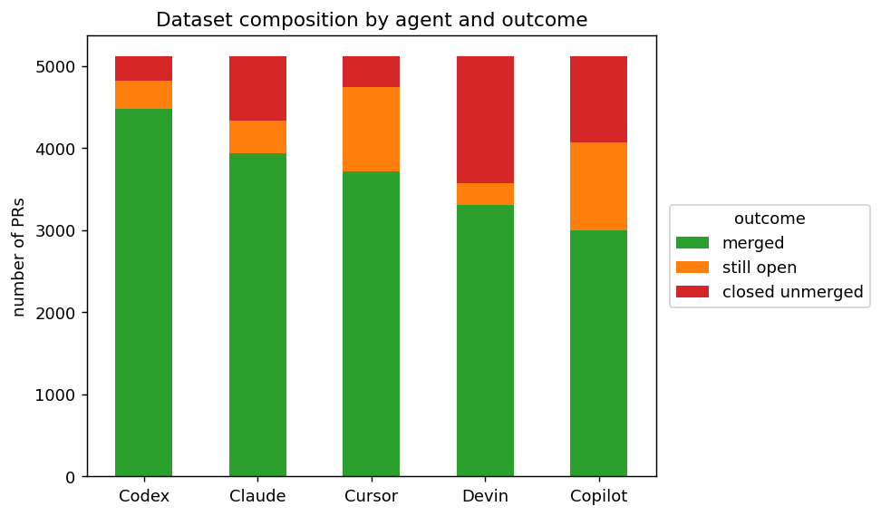
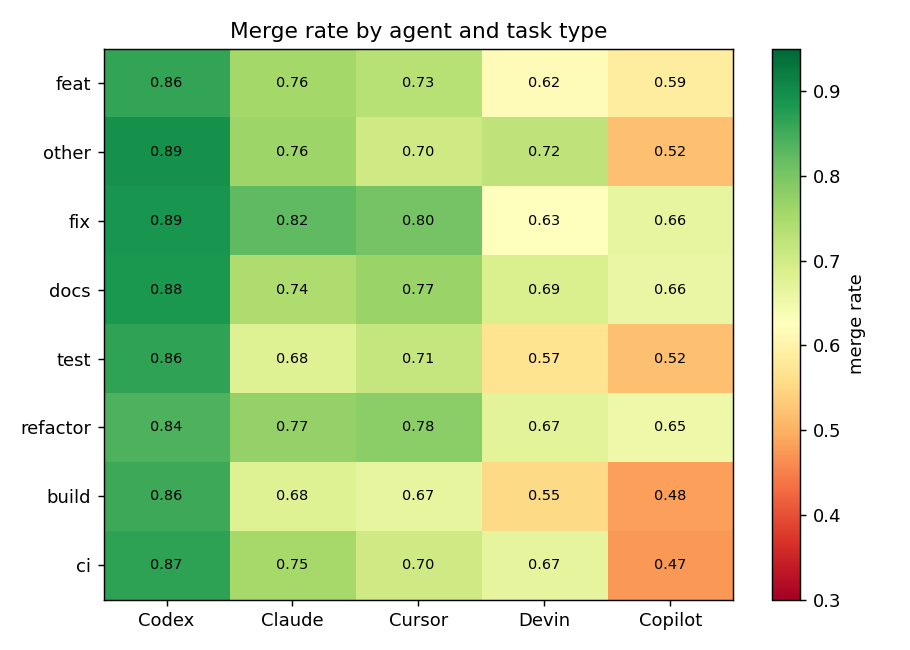
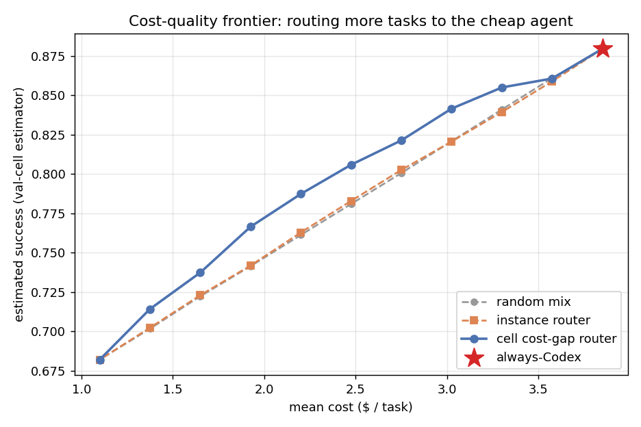
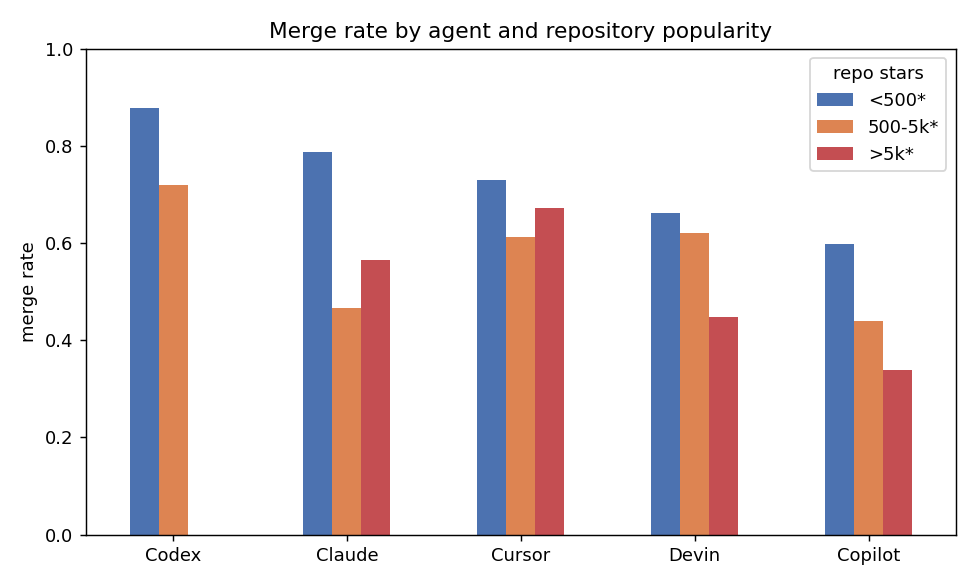
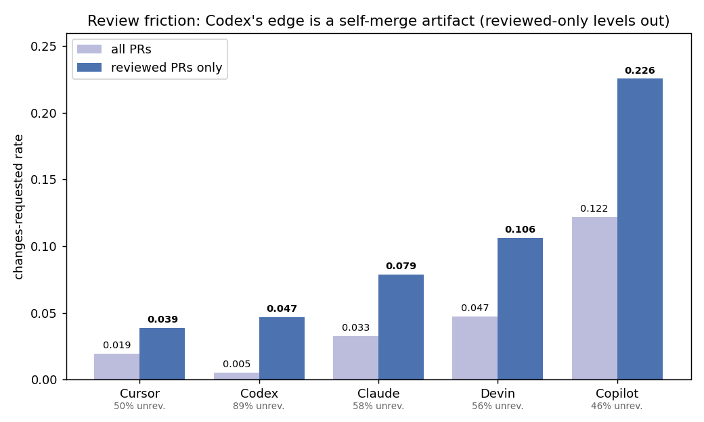
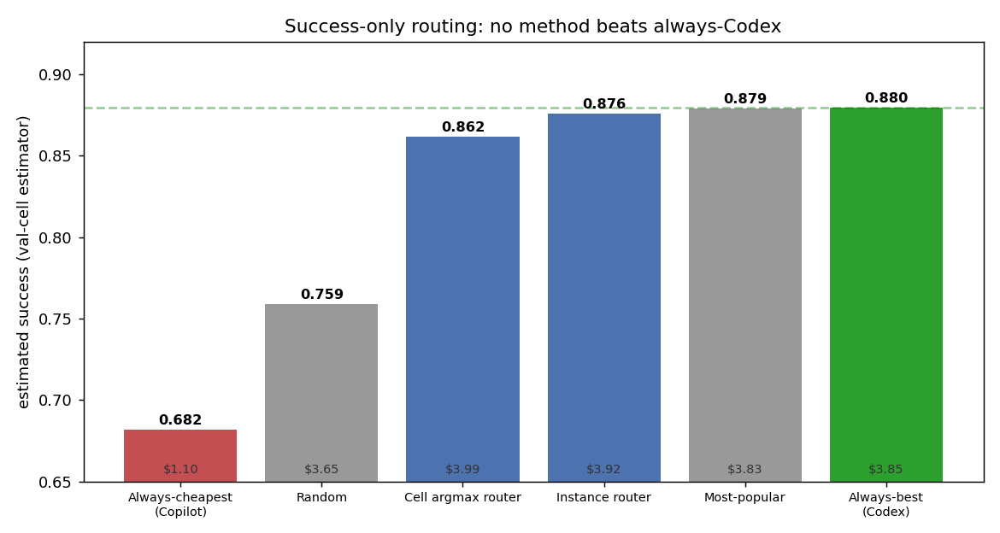
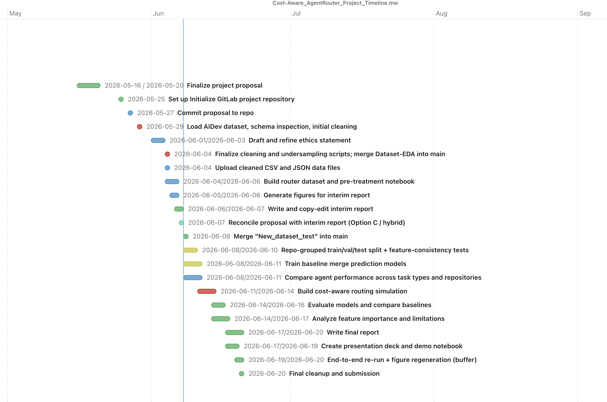

Cost-Aware AgentRouter: Interim Report
Course: Summer 2026 CSC 504 Group 13 Team: Ziming Dong, Nhan Huynh, Ming Chen, Jason Thomo
1. Introduction, Motivation & Research Questions
AI coding agents — Codex, Devin, Copilot, Cursor, and Claude Code — now routinely open pull requests on public GitHub. They differ several-fold in subscription and usage cost (Section 3.5), yet a team typically picks one out of habit. We ask whether that choice can be made better. We frame it as a cost-aware router: given a task, score each agent’s expected success and pick the agent that maximizes success net of cost. We study the question offline on AIDev, a large dataset of agentic pull requests.
Our main result is cautionary. On success alone, no learned router beats an always-best-agent policy — and that baseline turns out to be a selection-bias artifact rather than proven agent quality. The value of routing is confined to the cost axis, where a simple cell-level router buys a real cost saving at a modest success cost. This report contributes:
- an end-to-end 5-agent cost-aware routing pipeline on AIDev (a balanced 25,580-PR corpus, an XGBoost model with agent-as-input, and a held-out off-policy estimator);
- evidence that the strong always-best-agent baseline is confounded by selection bias and self-merge workflow rather than capability (Sections 4.4–4.5);
- a cost–quality frontier on which a cell cost-gap router gives the best available trade-off (Section 4.3).
Research questions (from the proposal):
- RQ1. Do the five agents show measurably different merge rates across task categories?
- RQ2. How accurately can a regressor predict per-agent success from task and repository proxy features?
- RQ3. Can a cost-aware router improve the cost–quality trade-off over always-best-agent, and which routing signal achieves it?
3. Methods and Datasets
3.1 Dataset
We use AIDev [Li et al. 2026], read through DuckDB. We build the corpus from the full dump of about 932k agent PRs rather than the smaller “pop” subset, which holds too few minority-agent PRs to train a 5-agent router (Claude_Code has 459, Cursor 1,541). The steps:
- Filter to the five agents; require a
repo_idand non-empty task text. - Label each PR from
stateandmerged_at(Section 3.2). - Join repository metadata (
language,forks,stars). - Derive
task_type(a conventional-commit rule on the title),has_issue(related_issuelinkage), and a partially strippedbody_clean(footers, URLs, and agent tokens removed, but emails and some tool names remain; used only in the v1 leaky analysis). - Balance by down-sampling each agent to the smallest count (Claude_Code, 5,116), giving 25,580 PRs, 5,116 per agent. Down-sampling keeps each agent’s natural outcome distribution, which carries the routing signal. Built by
build_router_dataset.py, written todata/router_dataset.jsonl.

Figure 1. Outcome distribution per agent (balanced corpus). Per-agent merge rates vary widely (Codex 87.6%, Claude 77.0%, Cursor 72.6%, Devin 64.6%, Copilot 58.6%), and so does the still-open versus closed-unmerged structure (Devin 30% closed-unmerged; Copilot 21% still-open), which points to differing workflows.| split (repo-grouped 70/15/15) | rows |
|---|---|
| train | 18,188 |
| val | 3,497 |
| test | 3,895 |
3.2 Labels
We model a regression target success in {merged: 1.0, still_open: 0.3, closed_unmerged: 0.0}. Limitation (to revisit): still_open is right-censored rather than “0.3 of a success”, and open-rates differ by agent, so the 0.3 heuristic can bias the agent ranking. A binary or censored treatment is planned (Section 6).
3.3 Features (two regimes)
The AIDev title and body are the agent-authored PR, produced after the agent acts. They are post-treatment and not available at routing time, so we report two feature regimes:
- v1 (initial, leaky). An earlier version used the PR title plus
body_clean(frozen MiniLM embeddings, chunked for long text), body-derived difficulty (length, code-block count, stack-trace flag), repo metadata, andtask_type. This regime contains post-treatment leakage, which motivated v2. - v2 (reduced-leakage,
05_router_pretreatment.ipynb). Drops the PR body and every body-derived feature; uses the cleanedtitle(agent tokens stripped) as a reduced-leakage task proxy, plus repo metadata (language, logstars, logforks),has_issue, andtask_type. The title is itself agent-authored, so this is reduced-leakage rather than strictly pre-treatment.
In both regimes the agent identity is an input one-hot feature, not the prediction target.
3.4 Model and routing
A single XGBoost regressor learns f(task features, agent) -> success, an implicit table P(success | task, agent). To route, we score all five agents for a task — holding the base features fixed and swapping the agent one-hot — and then pick an agent. The success-only policy picks argmax_a P(success | x, a); the cost-aware policy picks argmax_a [ P(success | x, a) - lambda * cost(a) ].
The cost-aware objective is conceptual. Copilot is the only agent cheaper than Codex, so the reported frontier is a Codex-to-Copilot budget sweep — an increasing fraction of tasks moved to Copilot — rather than a literal five-agent lambda grid.
We compare two signals for choosing which tasks to move. The instance router uses the XGBoost model’s per-task estimate. The cell signal uses a per-(language × task_type) estimate of each agent’s historical success, and we apply it two ways: a success-only cell argmax router, and a cell cost-gap router that ranks tasks by the cell’s Copilot-minus-Codex success gap (Section 4.3). We also ran an encoder ablation (MiniLM, mpnet, and a code-aware model) and tested per-agent calibration (Section 4).
The routing policies and baselines compared throughout the report are:
| routing policy | how it chooses an agent |
|---|---|
| Always-best (Codex) | always the highest historical-success agent |
| Always-cheapest (Copilot) | always the cheapest agent (the cost anchor) |
| Random | a random agent |
| Most-popular | the agent most used for the task’s cell in the real-world distribution |
| Instance router | argmax of the XGBoost per-task success estimate |
| Cell argmax router | argmax of the cell’s historical per-agent success |
| Cell cost-gap router | moves the tasks whose cell has the smallest Copilot-minus-Codex success gap |
3.5 Cost model
The five agents bill on different bases (token API for Codex and Claude, request/credit for Copilot, ACU for Devin, a backend-model pool for Cursor), so we use a normalized marginal per-PR cost scenario rather than exact vendor billing. Token-priced agents are sized by an agentic-PR budget (600k input, 200k output) at public API rates; the rest are mapped to an approximate per-PR cost:
| agent | Copilot | OpenAI_Codex | Cursor | Devin | Claude_Code |
|---|---|---|---|---|---|
| $ / PR | 1.10 | 3.85 | 3.85 | 4.50 | 4.80 |
Basis: Codex from GPT-5.3-Codex ($1.75 / $14 per MTok); Claude from Sonnet ($3 / $15); Cursor is backend-model dependent, with the base using a Codex-class rate; Devin is two ACUs at $2.25; Copilot uses its request/credit pricing.
Limitations: these are scenario costs, not exact billing. The token-priced values depend on the budget assumption and the request/ACU/backend-priced ones on the billing model, and we do not scale cost by task size (the log(forks) proxy collapses because 74% of repos have zero forks). A fuller pricing sweep and task-size scaling are left to future work.
3.6 Splits and evaluation
Splits are grouped by repo_id so that no repo crosses train, validation, or test, and all encoders are fit on the training split only.
Instance-level counterfactual evaluation is impossible here. In related_issue, only 5 issues were attempted by two or more distinct agents, so we almost never observe two agents on the same task. We therefore use a subgroup direct-method estimator. We estimate each agent’s success per (language × task_type) cell on the held-out validation cells, then use those estimates to value each policy’s test-set choices. Scoring on validation cells — rather than the training cells that the cell-based router routes by — makes the estimate less circular. It is not fully independent, since the model’s early stopping also uses validation; bootstrap confidence intervals are planned (Section 6).
We evaluate the routers (Section 3.4) against four baselines (Section 4.5, Table 2, Figure 6):
- random — a random agent;
- always-cheapest — always Copilot, the cost anchor;
- most-popular — the agent most used for the task’s cell in the real-world distribution, reconstructed by undoing the per-agent down-sampling;
- always-best-agent — always Codex.
Planned (Section 6): a time-based split, IPW, and bootstrap CIs.
4. Findings
4.1 RQ1: agents differ by task category
Merge rates differ sharply across agents (Figure 2). Across the eight most common task types, Codex ranges from 84% to 89%, against 48% to 66% for Copilot, so RQ1’s premise — that the agents are not interchangeable — holds. The leader barely changes with granularity: Codex has the highest merge rate in each of those eight task types. Only small or fine-grained slices favour another agent — tiny task categories such as perf or chore, or a minority of (language × task_type) cells — and that edge is small and does not survive out-of-sample (Sections 4.5 and 4.6). The heterogeneity is real in level but weak as a routing signal, which Section 4.4 ties to selection bias.

Figure 2. Merge rate by agent across the eight most common task types. Codex has the highest merge rate in each; the gap to the other agents is wide, and the leading agent does not change across these categories.4.2 RQ2: per-agent success is only marginally predictable
The model barely beats a per-agent-mean baseline, and encoder capacity or type does not help. The encoder ablation below runs under the leaky v1 feature set (it includes the post-treatment PR body, so these MAEs are optimistic):
| v1 leaky encoder ablation | test MAE |
|---|---|
| MiniLM | 0.305 |
| mpnet-base (110M) | 0.307 |
| code-aware (st-codesearch) | 0.297 |
Even with that leakage the best encoder (0.297) barely improves on the per-agent-mean baseline below, and encoder type or size hardly moves it. The honest, reduced-leakage v2 model is what we report everywhere else:
| reduced-leakage v2 model | test MAE |
|---|---|
| per-agent-mean baseline | 0.331 |
| v2 (cleaned title + repo) | 0.306 |
| v2 (repo metadata only, no text) | 0.309 |
Takeaway: most predictive power comes from the agent identity; the task text contributes little (dropping it moves MAE only from 0.306 to 0.309), and bigger or code-aware encoders do not change that. The ceiling is the data signal, not the model.
4.3 RQ3: a cell cost-gap router improves the cost–quality frontier
On success alone, no learned router beats always-best-agent. Under the held-out validation-cell estimator, the instance router scores 0.876 and the cell argmax router 0.862, both below always-Codex at 0.880. A text-free model collapses to always-Codex, and dropping the leaked body features left test MAE essentially unchanged at 0.306, so the task text was never carrying the decision. The value of routing is therefore on the cost axis.
Saving cost means sending some tasks to the only cheaper agent, Copilot, at $1.10 against Codex’s $3.85. Copilot is weaker on average, so the question is which tasks to send. We compare three ways to choose, scored at matched cost (Figure 3):
- random mix sends a random fraction to Copilot;
- instance router sends the tasks the XGBoost model rates closest between the two agents;
- cell cost-gap router sends the tasks whose (language × task_type) cell has the smallest historical Copilot-minus-Codex gap — the cells where the cheap agent loses least.
| mean cost | random | instance router | cell cost-gap router |
|---|---|---|---|
| $3.85 (always-Codex) | 0.880 | 0.880 | 0.880 |
| $3.30 (14% cheaper) | 0.841 | 0.839 | 0.855 |
| $2.75 (29% cheaper) | 0.801 | 0.803 | 0.821 |
| $2.20 (43% cheaper) | 0.761 | 0.763 | 0.787 |

*Figure 3. Estimated success at matched cost (held-out validation-cell estimator). The instance router is no better than a random mix, because the text signal is too weak to pick tasks. The cell cost-gap router buys about two extra points of success at every cost level (for example 0.821 against 0.803 at 29% lower cost). The frontier still slopes down, so cost savings come at a real success cost, but the cell cost-gap router gives the best available trade-off.In cost-versus-best terms, the cell cost-gap router keeps about 93% of always-Codex’s success (0.821 against 0.880) at 29% lower cost ($2.75 against $3.85), and about 97% (0.855) at 14% lower cost.
4.4 Why always-Codex is so strong: selection bias and review intensity
always-Codex simply inherits Codex’s high observed success (87.6% merged, Figure 1), the highest of the five and highest in nearly every cell. This is largely selection bias rather than proven capability (Figure 4):

Figure 4. 99% of Codex PRs sit in<500★ repos (and none in >5k★), exactly where merge rates are highest for every agent. Codex’s fast self-merge outcome structure (88% merged, 6% closed) contrasts with Copilot’s formal-review pattern (21% still-open). The lead persists under star-difficulty adjustment (Codex’s merge rate is about 14 percentage points above the rate expected from its PRs’ repo-popularity buckets), so the confound is more likely the unobserved self-merge workflow than repo popularity alone.
The advantage is review-driven. Changing the quality metric exposes the same confound. On the pop subset (which carries review data), Codex also looks strongest on several raw diagnostics (clean-merge rate, changes-requested rate, review burden, commit count), but these diagnostics are review-confounded: 89% of its PRs are never reviewed (self-merged), against 46 to 58% for the others, and an unreviewed PR cannot accumulate changes-requested. Restricting to PRs that were reviewed, Codex’s edge collapses and Cursor is at least as clean (Figure 5):
| changes-requested rate | all PRs | reviewed PRs only |
|---|---|---|
| Cursor | 0.019 | 0.039 |
| Codex | 0.005 | 0.047 |
| Claude | 0.033 | 0.079 |
| Devin | 0.047 | 0.106 |
| Copilot | 0.122 | 0.226 |

Figure 5. Among reviewed PRs, Codex no longer leads: Cursor has the lowest changes-requested rate (0.039 against Codex’s 0.047, within noise). Codex’s raw “quality” is an artifact of 89% of its PRs going unreviewed.So the agent ranking depends on the quality metric: under a review-friction metric that controls for self-merge, Cursor (which trails Codex on raw merge rate) matches or edges it. We treat this as directional rather than conclusive (pop subset only, observational, a small within-noise gap, and which PRs get reviewed is itself non-random), and flag richer quality labels as future work.
4.5 Baselines: “best” and “most-popular” are the same agent
A richer baseline suite (Table 2, Figure 6) shows that the always-best-agent baseline is numerically close to a most-popular one. The most-popular baseline routes each task to the agent most frequently used for its (language × task_type) cell in the real-world distribution, reconstructed by undoing the per-agent down-sampling. It sends 99% of tasks to Codex and scores 0.879 — essentially equal to always-Codex at 0.880. In other words, the most-used agent and the most-successful agent are the same agent.
Neither learned router exceeds it: the instance router scores 0.876 and the cell argmax router 0.862. Both occasionally route to pricier agents, so they even cost slightly more than always-Codex (Table 2). Always-Codex therefore dominates them on both success and cost. Always-cheapest (Copilot) anchors the cheap end at 0.682 and $1.10.
| baseline | success | mean $ | Codex share |
|---|---|---|---|
| Always-cheapest (Copilot) | 0.682 | 1.10 | 0% |
| Random | 0.759 | 3.65 | 20% |
| Cell argmax router | 0.862 | 3.99 | 77% |
| Instance router | 0.876 | 3.92 | 92% |
| Most-popular (raw usage) | 0.879 | 3.83 | 99% |
| Always-best (Codex) | 0.880 | 3.85 | 100% |
Table 2. Success-only routing, scored on the held-out validation-cell estimator. No learned router beats always-Codex; the cell argmax router’s value shows up only under cost pressure (Section 4.3). An in-sample cell oracle reaches 0.93 but is circular (Section 4.6).

Figure 6. Success-only routing (held-out validation-cell estimator). Always-best (Codex) and most-popular coincide at about 0.88 (both route about 99% to Codex), so the strong baseline conflates quality with popularity; no learned router beats it on success alone.4.6 Negative results that strengthen rigor
- Removing leakage (v2) did not overturn the negative routing result; it sharpened it.
- Per-agent calibration did not help: it left routing success essentially unchanged (and slightly worse in the earlier v1 setup), so we did not adopt it.
- The cell signal does not help success-only routing: the cell argmax router (0.862) stays below always-Codex (0.880), and an in-sample cell oracle reaches 0.93 only because it is circular. The cell signal pays off solely under cost pressure (Section 4.3).
5. Discussion
Contrast with cost-aware LLM routing. RouteLLM, Hybrid-LLM, and FrugalGPT report that learned routing dominates an “always strongest” policy on cost and quality. On the success axis for long-horizon software tasks we find the reverse: a learned router does not beat always-best-agent. The difference is the data-generating process. Those works route over a shared input with near-counterfactual signal, whereas AIDev is purely observational. Each task is attempted by exactly one agent (only 5 multi-agent issues), agent assignment is non-random, and “merged” is a workflow-confounded proxy. Our value, like theirs, appears on the cost axis (Figure 3), echoing FrugalGPT’s cost-for-quality trade-off, though here deeper savings carry a real, not negligible, success cost.
Contrast with AIDev empirical studies. Prior AIDev work treats agent identity descriptively. Treating it as a decision variable shows the decision is dominated by one agent whose apparent superiority is heavily confounded (Sections 4.4 and 4.5). What looks like an agent-quality ranking is largely a usage and selection pattern, so the result is cautionary rather than deployable.
Contrast with JIT defect and merge prediction. Adding agent identity confirms that merge is a noisy, confounded label; per-agent base rates dominate the weak task-text (title-proxy) signal.
Methodological takeaway. The binding constraints are the lack of counterfactual overlap and the selection bias, and no encoder, architecture, or calibration change overcomes them. This positions the work as an observational, reduced-leakage feasibility study of agent routing on AIDev.
Threats to validity. Merge is not the same as quality; the still_open=0.3 label censors; the cost token-budget is an assumption; the direct-method estimator assumes within-cell exchangeability (no IPW or CIs yet); the population shifts to all repos, including 0-star ones; and task_type is rule-based (about 27% fall into “other”).
6. Conclusions
We built an end-to-end 5-agent cost-aware routing pipeline on AIDev: a balanced 25,580-PR corpus, an XGBoost model with agent-as-input, a held-out-cell off-policy estimator, and a cost-aware cell cost-gap frontier. Agents do differ by task (RQ1), but a learned router cannot beat always-best-agent on success. That result is robust to removing post-treatment leakage, and it is largely explained by the selection bias documented in Section 4.5, where the “best” agent turns out to be simply the most-used one. The router’s value is confined to the cost–quality frontier (RQ3): a cell cost-gap router gives the best available trade-off, about two points more success than a random or instance router at the same cost. It keeps about 93% of always-Codex’s success at 29% lower cost, though going cheaper still costs real success.
We will frame the final report as an observational, reduced-leakage feasibility study rather than a deployable per-task router. Planned work: (i) a time-based split with IPW and bootstrap confidence intervals; (ii) a censored or binary treatment of still_open; (iii) a token-budget cost sensitivity sweep; (iv) quality labels beyond merge (review friction, reverts, tests), since the agent ranking is metric-dependent (Section 4.4); and (v) ideally counterfactual or online A/B data, the only real fix for the overlap problem.
References
- Li, Zhang, and Hassan (2025). The Rise of AI Teammates in Software Engineering (SE) 3.0: How Autonomous Coding Agents Are Reshaping Software Engineering.
- Li, Zhang, and Hassan (2026). AIDev: Studying AI Coding Agents on GitHub.
- Ong et al. (2025). RouteLLM: Learning to Route LLMs with Preference Data.
- Chen, Zaharia, and Zou (2024). FrugalGPT: How to Use Large Language Models While Reducing Cost and Improving Performance.
- Ding et al. (2024). Hybrid LLM: Cost-Efficient and Quality-Aware Query Routing.
- Jimenez et al. (2024). SWE-bench: Can Language Models Resolve Real-World GitHub Issues?
- Cui et al. (2024). The Effects of Generative AI on High-Skilled Work: Evidence from Three Field Experiments with Software Developers.
- Understanding Dominant Themes in Reviewing Agentic AI-authored Code.
- He and Garcia (2009). Learning from Imbalanced Data.
- Ni et al. (2024). Just-in-time defect prediction on JavaScript projects: A replication study.
- Menzies and Shepperd (2019). Bad Smells in Software Analytics Papers.
More routing and cascading references, author/year for the four AIDev follow-up entries, and full BibTeX (venues, DOIs) will be added in the final report.
Appendix: Artifacts & reproducibility
build_router_dataset.py (dataset build), 05_router_pretreatment.ipynb (the reduced-leakage pipeline), and make_figures.py (regenerates Figures 1 to 6 and the reported numbers; Figure 5 additionally reads pr_reviews). Data read from hf://datasets/hao-li/AIDev through DuckDB.
Updated Project Timeline

Updated timeline / Gantt chart (revised 2026-06-07), with remaining tasks. Items before the early-June marker are complete: the proposal, data cleaning, the balanced 25,580-PR router dataset, the reduced-leakage v2 model, the figures, and this interim report. Remaining tasks run to the 2026-06-20 submission: baseline merge-prediction training and agent comparison, the cost-aware routing evaluation and baseline comparison, feature-importance and limitation analysis, the final report, the presentation deck and demo notebook, and a buffer end-to-end re-run with figure regeneration before final cleanup and submission.